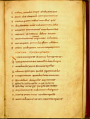

T. Lucretius Carus, De rerum natura libri VI. Latijn. Handschrift op perkament, 192 ff., 325 x 210 mm. Noordwest-Frankrijk (hofschool van Karel de Grote), begin van de negende eeuw. -- (VLF 30)
De rerum natura (Over de aard der dingen) is naar de inhoud een ongewoon dichtwerk. De Romeinse dichter Lucretius (94(?) - 55 v.Chr.) schreef het om zijn publiek ervan te overtuigen dat de wereld beheerst wordt door mechanische wetten. De mens hoeft noch de willekeur der goden, noch de straf in het hiernamaals te vrezen, zo luidt zijn boodschap. Het is dan ook niet verwonderlijk dat het werk in de middeleeuwen vrijwel niet gelezen is. Het is tekenend voor de tijd dat het in de eerste helft van de negende eeuw, toen alles uit de Oudheid zo volledig mogelijk verzameld werd, minstens twee keer is afgeschreven. Want er zijn uit die tijd twee handschriften bewaard, beide thans in Leiden, die ter onderscheiding van elkaar naar het formaat de ‘codex quadratus’ (het vierkante handschrift) en de ‘codex oblongus’ (het langwerpige handschrift) worden genoemd. Het laatste is hier getoond.
Dit handschrift onderscheidt zich door zijn royale bladindeling. De pagina telt ondanks het grote formaat maar twintig regels. De ruime regelafstand doet volledig recht aan de voortreffelijke Karolingische minuskel, het nieuwe schrift, dat tegen het einde van de achtste eeuw ontwikkeld werd.
Zoals zo vaak werd ook hier het oorspronkelijke handschrift nog eens gecorrigeerd. Soms gebeurde dat door de afgeschreven tekst zorgvuldig te vergelijken met het model; dan weer werden verbeteringen naar eigen inzicht aangebracht. Uiteraard was het zaak daarbij het boek zoveel mogelijk te sparen. Bij perkament is dat niet moeilijk, omdat men het geschrevene gemakkelijk met een mesje weg kan krabben. Ook de corrector van dit Lucretiushandschrift deed dat. Een verbetering op de getoonde pagina, folio 22r, springt gemakkelijk in het oog, omdat de corrector één enkele regel tot schade van de bladspiegel door twee nieuwe verving. De ingrepen van de corrector zijn verder gemakkelijk te herkennen, omdat hij een ander schrifttype gebruikte, het zogeheten insulaire schrift, dat in Engeland en Ierland thuishoort. Zelfs zijn naam is achterhaald. Bischoff stelde vast dat het schrift van de hand moest zijn van de geleerde Ierse monnik Dungal, die door Karel de Grote naar het continent was gehaald.
De herkomst van het handschrift uit de onmiddellijke omgeving van de keizer zelf verklaart de vorstelijke vormgeving van het boek.
Literatuur
- Karl der Grosse, Werk und Wirkung. Aachen 1965, p. 206.
- M. Ferrari, ‘In Papia conveniunt ad Dungalum’, in: Italia medioevale e umanistica, 15 (1972), p. 1-52, vooral p. 38.
- K.A. de Meyïer, Codices Vossiani Latini. Leiden 1973-1984 ( = Bibliotheca Universitatis Leidensis. Codices manuscripti. XIII-XVI), t. 1, p. 65-68, vergelijk t. 4, p. 2-3.
- B. Bischoff, Mittelalterliche Studien. Ausgewählte Aufsätze zur Schriftkunde und Literaturgeschichte. Bd. 3. Stuttgart 1981, p. 42, 62.
- M.D. Reeves in: Texts and transmission. A survey of the Latin classics. Ed. by L.D. Reynolds. Oxford 1983, p. 218-222.
- Facsimile: Lucretius. Codex Vossianus Oblongus. [...] Praefatus est Aemilius Chatelain. Lugduni Batavorum 1908 (= Codices Graeci et Latini photographice depicti. Tom. XII).
| vorige pagina | top pagina |